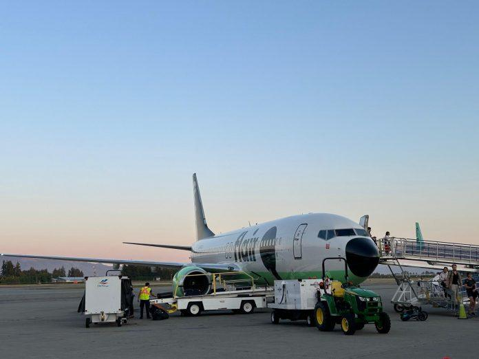

加拿大廉航Flair Airlines称航班因在卑诗发生鸟击而取消，但两名乘客自己研究后认为事实并非如此，法庭以该航空公司有关鸟击事件证据不足为由，勒令其对乘客做出赔偿。
民事审裁处（Civil Resolution Tribunal，简称CRT）周三（7日）在网上发布裁决书，指去年8月，Flair乘客唐纳(Olivia Donner)和布罗德赫斯特(James Broadhurst)被航空公司告知，他们从卡加利飞往温哥华的航班因故取消。
根据加拿大的航空乘客保护条例，如果航班延误和取消是由航空公司控制的原因造成，旅客可以获得赔偿，在这种情况下，每位申请人有权索赔500元。
但Flair Airlines辩称，该公司不应支付费用。
仲裁庭成员德罗兹迪亚克(Jeffrey Drozdiak)在裁决中表示：“Flair表示，他们取消这趟航班，是因为该航班的飞机在温哥华降落时遭遇鸟击。”
据称，Flair机组人员采取了必要措施，通知塔台可能发生了鸟击事件，“Flair说，一名飞机维修专家发现多次鸟击造成了损坏，并透过内部简讯系统记录了这一情况。”
但唐纳和布罗德赫斯特自己就此事展开研究，他们咨询了民航每日事件报告系统——这是一个追踪医疗紧急情况、导航错误和航班改道等事件的联邦资料库，该系统也跟踪鸟类撞击事件。
德罗兹迪亚克写道：“Flair表示，塔台会将任何事件发送给加拿大交通部，并输入到CADORS中。”而搜寻结果显示，Flair在那段时间并没有任何遭受鸟击的报告。
对于没有相关纪录，Flair辩称，不清楚为什么会没有鸟击事件的报告，也没有提交自己的内部记录，或任何文件来支持其说法。
仲裁员判决书称：“除了Flair的一面之词外，我面前没有任何证据表明航班因鸟击而被迫取消。”因此作出对航空公司“不利的推论”。
鉴于此推论以及提交的证据，仲裁庭裁定此次航班取消属于航空公司控制范围内，并命令其向每位乘客支付赔款。
图：记者黄忆欣摄
V6